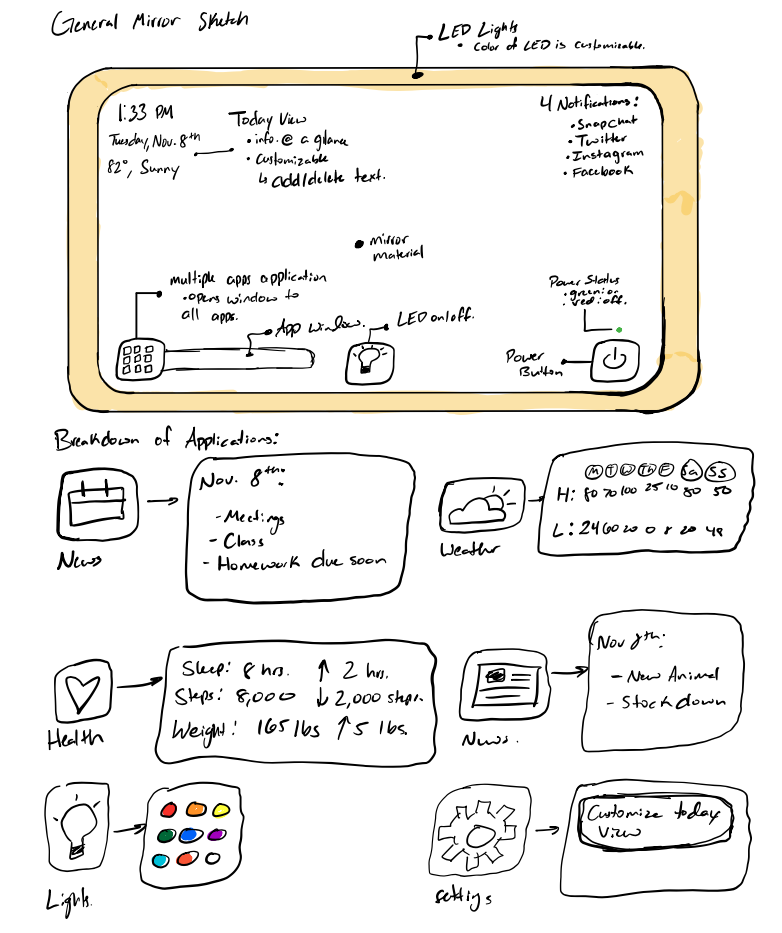
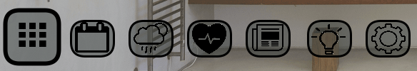
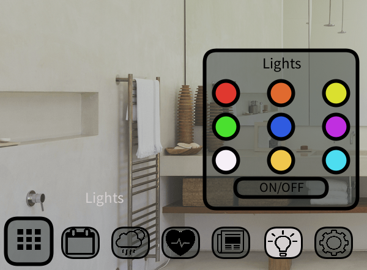

My Sketch:

Sketch Analysis:
Overall my skecth was very helpful when trying to design my mirror, it allowed me to spacially visualize everything that I anted to implement in my final project. The main features from the sketch that I wanted to implement was multiple apps, customizability, and the LED frame color customization. The bottom portion of my sketch details teh design of the windows of all of the apps which was great refernece for me when I was working within processing. I believe my sketch was very detailed and incoorperated all teh features that I wanted to in my final project it highlighted all teh deisgn aspects I was hoping for and served as a tool during the programming protion.
The main method of controlling the features of my mirror are found within my multiple apps application, upon hovering over this application a feedback element pops up showing users what this button will do, the feedback element is not only in the form of the button changing colors, but also text appearing saying "Open More Apps", this allows for no user confusion to happen and allows a user to understand what the button will do.
Example Picture:
Upon clicking the multiple apps bnutton , a list pop ups with all of the applications that I have made for this mirror.
Example Image of App List:
"Example Application Window:
As you can see from the above picture upon hovering over the app name the name of the app appears, this is there to give the user a way of seeing what the app is actually useful for, you can also see teh concise window that pops up when the application is in use, this was done purposfuly as my goal was to not block the main area of the mirror and instead have a little window where the user can perform their action and continue using the mirror
Example Video of All Applications:
My mirror has two other features which are a mirror on or off feature and a LED on or off function, exampled of both of these features are shown below:
As you can see upon a click of the center light button the lights on the side of the mirror begin to flash on and off besed on the click of the mouse
As you can see the power button not only includes visuyal feedback by the red or green light indicator signifying weather or not the mirror is on or off. If the mirror is off none of the buttons will work and the mirror will stop displaying any text and act as a normal mirror, and if the the mirror is on the apps will work and the user will be able to fully interact with the mirror.
For a more in depth look of the mirror watch the below video:
Full Youtube Video of Entire Explination:
User feedback is a very important aspect of any design, asking users on what they think about your deisgn is a very vital to the successful implementation fo your design. I was able to ask some of my friends about what they tought about my design and the main feedback that I had received was that my mirror was designed very well, both of the people that I asked really liked the customizability of the main mirror view as it makes th emirror personal to each user, they also liekd the addition of all of the apps that held the users data. They liked all the use of minimal color as they said it kept the design very modern and very clean. The one main drawback that one of the people that I interviewed was that they said that soem text was hard ot see due to the fake mirror backround that was chosen. Other than that one complaint both of the people that I interviewed said I had done agreat job and that they woudl definately use this product if it was a real thing.